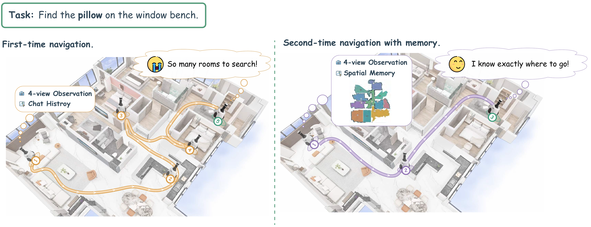
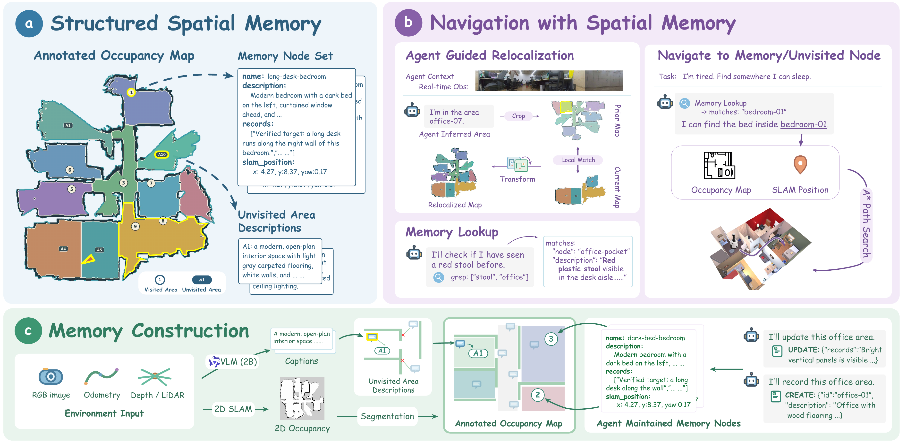

Build a spatial memory.
An area-segmented occupancy map stores traversable geometry. The agent creates and updates map-grounded memory nodes containing useful scene information.
SuperNav-1.5 gives navigation agents a structured spatial memory: an area-segmented occupancy map with agent-maintained memory nodes. It connects scene recall to executable routes, helping the agent explore efficiently, reach successive goals, and reuse its memory across sessions.
With memory / Without memory
Loading recorded trajectories…
Preparing comparison
Recorded paths, illustrated at a shared distance rate. Not execution timing.
From everyday requests to longer journeys.
Six demonstrations on a real robot.
Loading real-world demonstrations…
Twelve demonstrations, from a single target
to memory reused across sessions.
Loading simulation demonstrations…
Remember what matters.
Keep it connected to a navigable map.

An area-segmented occupancy map stores traversable geometry. The agent creates and updates map-grounded memory nodes containing useful scene information.
The agent queries remembered locations or selects unvisited areas. Geometric navigation turns its selected destination into an executable path.
Agent-guided relocalization aligns new observations with the stored map, allowing the agent to reuse memory even from a different starting position.

Success and path efficiency across
four navigation settings.
34%→52%
+18 percentage pointsSuperNav → SuperNav-1.50.1801→0.3867
2.15× path efficiencySuperNav → SuperNav-1.50.4364→0.5022
+15.1% SPLWithout memory → With memory · changed spawn120 val-unseen episodes · SR (%) and SPL ↑
| Method | Budget | 1 m | |
|---|---|---|---|
| SR ↑ | SPL ↑ | ||
| AstraNav-Memory | 500 steps | 62.50 | 0.3490 |
| OmniNav | 500 steps | 59.20 | 0.3320 |
| SuperNav-1.5 | 500 steps | 78.33 | 0.4354 |
| HarnessVLN | 3600 s | 53.33 | 0.2941 |
| SuperNav | 3600 s | 73.33 | 0.4105 |
| SuperNav-1.5 | 3600 s | 80.00 | 0.4317 |
Compare within each evaluation budget. Success is evaluated at a 1 m distance threshold.
150 single-object + 150 multi-object episodes · 3600 s
| Method | Single-object | Multi-object | ||
|---|---|---|---|---|
| SR (%) ↑ | SPL ↑ | SR (%) ↑ | SPL ↑ | |
| NaVid | 24.67 | 0.1599 | 2.67 | 0.0216 |
| Uni-NaVid | 34.00 | 0.1833 | 1.33 | 0.0131 |
| StreamVLN | 13.33 | 0.1036 | 0.00 | 0.0000 |
| OmniNav | 27.33 | 0.2133 | 4.00 | 0.0275 |
| SuperNav | 78.00 | 0.4127 | 34.00 | 0.1388 |
| SuperNav-1.5 | 79.33 | 0.4246 | 52.00 | 0.2494 |
SuperNav and SuperNav-1.5 use GPT-5.6-terra and the same geometry-based executor.
Demand-Bench · 200 episodes · 3600 s
| Method | SR (%) ↑ | SPL ↑ |
|---|---|---|
| NaVid | 17.00 | 0.0920 |
| Uni-NaVid | 25.00 | 0.0943 |
| StreamVLN | 25.50 | 0.0775 |
| OmniNav | 37.50 | 0.1213 |
| SuperNav | 59.50 | 0.1801 |
| SuperNav-1.5 | 61.00 | 0.3867 |
70 single-object and 130 multi-object episodes. Path efficiency is labeled SPL following the paper’s experiment description.
Habitat-GS · 150 episodes · Memory reuse
| Session / memory | Spawn | SR (%) ↑ | SPL ↑ |
|---|---|---|---|
| Session 1 | A | 79.33 | 0.4246 |
| Session 2 / with memory | A | 82.67 | 0.5195 |
| Session 2 / without memory | B | 78.00 | 0.4364 |
| Session 2 / with memory | B | 82.00 | 0.5022 |
A: unchanged spawn. B: changed spawn. Session 2 with memory inherits the map and memory nodes from Session 1.
SR: success rate. SPL: success weighted by path length. Values transcribed from the SuperNav-1.5 manuscript.
If you find our work useful, please cite:
@misc{guo2026supernav15structuredspatialmemory,
title={SuperNav-1.5: Structured Spatial Memory For Agentic Navigation Systems},
author={Jiarui Guo and Jinkai Zhang and Yuanhong Yu and Yongchen Zai and Futang Zhu and Ruizhen Hu and Sida Peng and Xiaowei Zhou},
year={2026},
eprint={2611.29912},
archivePrefix={arXiv},
primaryClass={cs.RO},
url={https://arxiv.org/abs/2611.29912},
}